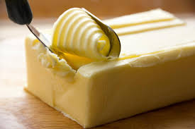
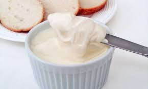
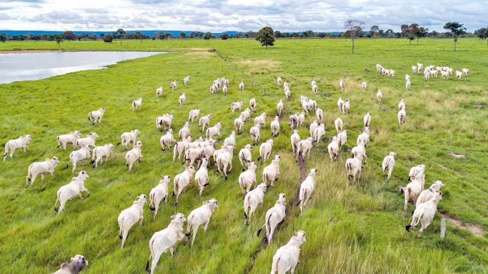

Derivados do Leite
Nossos produtos derivados do leite são de qualidade de exportação, com as melhores avaliações e todos certificados pela Vigilância Sanitária e pelo Ministério da Agricultura.




Nosso Rebanho
Todo animal destinado ao frigorífico passa por diversas etapas desde o seu nascimento até o abatimento, onde são controlados todos os tipos de vacinação e evolução do gado. Nosso processo garante a rastreabilidade completa de cada animal.


